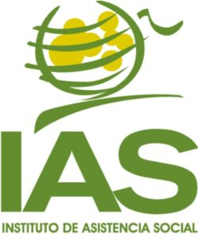

El Instituto de Asistencia Social (IAS) es un organismo estatal encargado de administrar y supervisar las actividades de juegos de azar en la provincia de Formosa, Argentina. Su principal objetivo es regular y controlar las loterías, casinos, y otras formas de entretenimiento con fines de lucro, garantizando que las operaciones se realicen de manera transparente y en beneficio de la comunidad. Además, el IAS destina una parte significativa de los ingresos generados a programas de asistencia social y obras públicas, contribuyendo al desarrollo socioeconómico de la provincia.